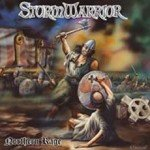

|
|
||
StormWarrior : Northern Rage (2004) |
|

http://www.stormwarrior.de |
1. And the Northewinde Bloweth 2:38 |
8.8/10 |
|
"Northern rage" es el segundo disco de los alemanes StormWarrior, y nos trae un power metal directo, crudo, de temática épica. El estilo musical es cercano al de los primeros Helloween, lo que es una comparación inevitable al saber que Kai Hansen ha producido sus dos discos, y que en este aporta su voz y su guitarra en un par de temas. El inicio del disco es tranquilo, acústico, y con el apoyo de los teclados, quizás con un sonido demasiado sintético, para conseguir establecer una atmósfera épica que se ve desgarrada por un trueno de furia en el arranque de "Heroic deathe", con el furioso doble bombo junto a la crudeza de las guitarras apoyando un tema muy directo, con dos solos de guitarra y la aparición de la voz de Kai Hansen hacia el final. Sin tiempo para recuperarse surge "Valhalla", otra furibunda demostración a la batería con estribillo ultrasimple, ¡Valhalla!, pero efectivo y un largo solo de guitarra. Una breve pausa al inicio de "Thy laste fyre", y de nuevo una base de doble bombo con estribillo sencillo pero resultón. En "Welcome thy rite" la banda no se descabalga del vertiginoso ritmo de la batería, aunque los coros apuntan algo más de melodía. Algo más lento, no mucho, transcurre "Odinn's Warriors", con otro de los simples pero pegadizos estribillos del disco, y otro largo solo de guitarra. "Bloode Eagle" se acelera de nuevo, aunque lo más destacable de esta canción es el trabajo con las voces y los coros. El octavo corte, "Sigrblót", se mantiene en los parámetros del resto del álbum, aunque ni el estribillo ni el solo de guitarra le hacen sobresalir. A "To Foreign Shores" le pasa algo parecido, aunque el estribillo en este caso es algo más interesante. El cierre lo echa "Lindisfarne", una pieza larga, con cambios de ritmo y otro estribillo de una sóla palabra, os dejo adivinarla :-). Comparar a este grupo con Helloween requiere un matiz: la comparación sería más justa al compararlos con el primer álbum de Helloween, el Walls of Jericho. La voz un poco cruda de Lars Ramcke se da un cierto aire a la de Kai Hansen por la época del Walls of Jericho y los sonidos de este disco comparten la crudeza con el del debut de Helloween. En cualquier caso, éste es un álbum que funciona: power metal rápido, canciones de estructura sencilla, estribillos para corearlos en los conciertos y solos de guitarra de los de toda la vida. |
||
- Crítica escrita por Rubén Béjar - |
||